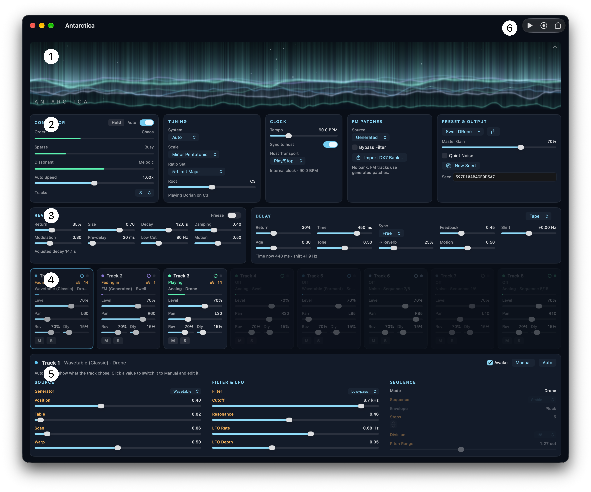

The window

The window (from top to bottom):
- Aurora: the visualization. Display or hide it.
- Conductor row: Conductor, Tuning, Clock, FM Patches, and Preset & Output.
- Effects row: Reverb and Delay.
- Track strips: one mixer strip for each track.
- Detail panel: the generative parameters of the selected track.
In the standalone app, the toolbar includes Play/Stop, Record, Sleep Timer, and Export Audio buttons.
Hover the pointer over a control to see help text.